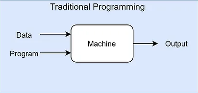
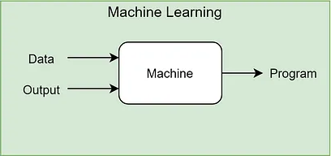

Why ML?
Traditional Programming
- Traditional programming has been the backbone of software development for decades, with programmers manually creating rules and logic to solve various problems.
- Traditional programming languages typically take data and (business or solution) rules as input and apply the rules to the data in order to come up with answers as output.
- The programmer is responsible for creating and implementing the rules and logic of the program, ensuring it works correctly for all possible input cases.
Why Machine Learning?
- The traditional programming paradigm is quite good and human intelligence and domain expertise is definitely an important factor in making data-driven decisions.
- We need Machine Learning to make faster and better decisions.
- The Machine Learning paradigm tries to take into account data and expected outputs or results if any and uses the computer to build the program, which is also known as a model.
- This program or model can then be used in the future to make necessary decisions and give expected outputs from new inputs.
Machine Learning
- A machine learning model is a program that can find patterns or make decisions from a previously unseen dataset.
- Feed these input and output pairs to any specific Machine Learning algorithm in your computer and build a model that learns inherent device patterns and observes the corresponding output or outcome.
- Deploy this model such that for newer values of device attributes it can predict if a specific device is behaving normally or it might cause a potential outage.